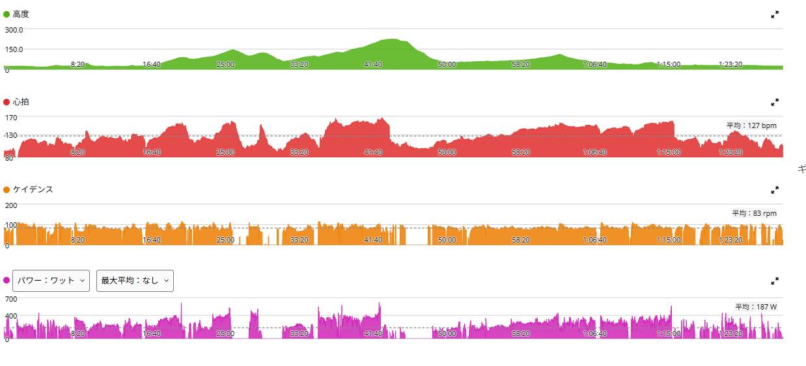
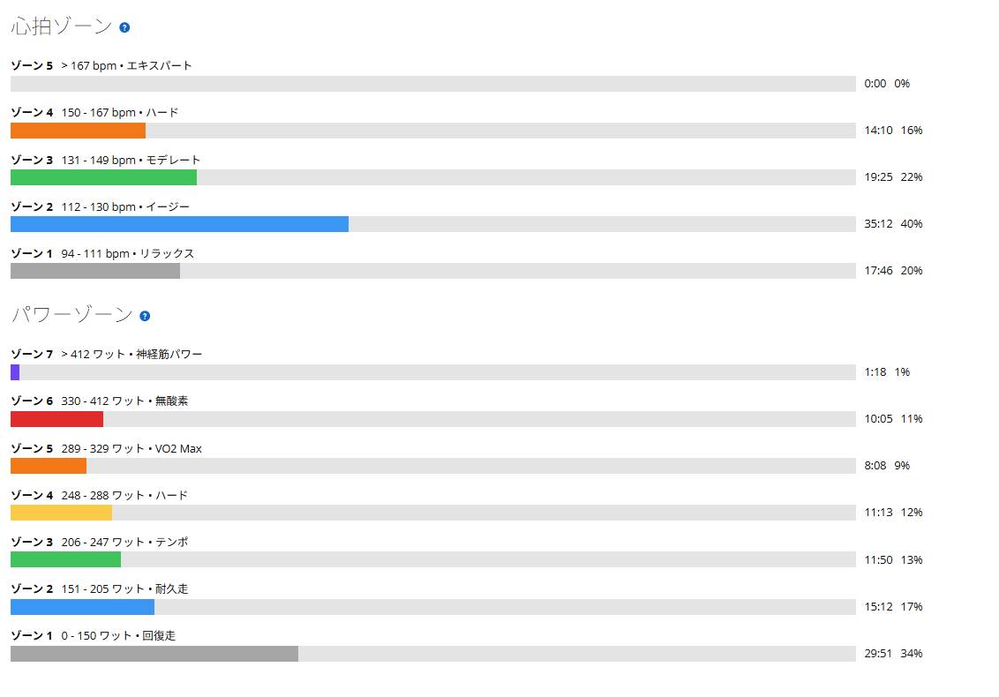

60/30で潰れた翌日、太平は7分00秒・324W
昨日はローラーで60秒ON／30秒OFF。350W前後を揃えるつもりだったものの、後半は出力を維持できなくなり、かなりきつい練習になった。
なので今日は太平山へ。前日の疲労もあるし、最初からタイムを狙うというよりは、走ってみて脚が動けば踏むくらいのつもりだった。……まあ、動いたら踏むのはいつものことである。

40.84km・NP247W・TSS117.2
- 全体40.84km / 1時間27分45秒 / 獲得474m / 運動量987kJ
- 負荷平均187W / NP247W / IF0.898 / TSS117.2
- 心拍・回転平均127bpm / 最大167bpm / 平均83rpm
- 高強度側パワーZ5以上で19分31秒 / 心拍Z4が14分10秒
結論から言うと、今日はかなり調子が良かった。前日にローラーであれだけ潰れているので、正直もっと重くてもおかしくなかった。
太平山は7分00秒・324W。前回より4秒速く7W高い
- 今日の太平山7分00秒 / 平均324W / 心拍151〜166bpm / 89rpm
前回が7分04秒・317Wだったので、4秒短縮して平均パワーも7W上がった。数字だけなら小さな更新である。ただ今回は前日にローラーの60/30でかなり追い込んでいる。その翌日にこれだけ踏めたことの方が、私としては印象に残った。
これまでの太平山を並べるとこうなる。
- 6月23日7分17秒 / 317W
- 7月30日7分12秒 / 322W
- 8月17日6分58秒 / 330W（最速）
- 8月31日7分04秒 / 317W
- 今日7分00秒 / 324W
最速は8月17日の6分58秒だが、あの日は330W出している。今日は2秒遅いだけで、パワーは6W低い。しかも前日が60/30の翌日である。そう考えると、悪くない内容だったと思う。

太平のあとも275Wと301W
- 太平のあと9分32秒 / 275W
- 信号待ちのあと4分35秒 / 301W
太平山だけで終わったわけではなかった。その後も約9分半を275W、最後の方では4分半ほどを301Wで踏めている。信号待ちを挟んでいるので、ひとつの連続走として見るものではない。
それでも、以前より「一発出して終わり」ではなくなってきた気がする。太平で324W出したあとに、まだ300W台を作れる。ここが今日いちばん嬉しかったところかもしれない。
「耐久値が上がった」は本当かもしれない
少し前から、身体の耐久値そのものが上がっているような感覚がある。スタート時に「今日は踏めないかな」と感じても、走り始めて峠に入ると普通に踏めることが増えた。今日も前日の疲労を考えればもっと脚が重くてもおかしくなかったのに、実際には太平山で324W。
FTPが急激に伸びたというより、高い出力を使った後でも走れる身体になってきた、という方が近いのかもしれない。富士ヒルを考えるなら、こういう変化はかなりありがたい。
ローラーと実走はやっぱり違う
昨日の60/30では、350W前後を揃えるだけでかなり苦しんだ。一方、今日は実走で300Wを超える場面が何度もあった。太平山では324Wを7分、ケイデンスも89rpm。
最近感じているのは、実走では身体や重心移動まで含めて自転車を動かせるということ。以前『鉄血のオルフェンズ』で三日月が戦いながら太刀の使い方を理解して、「こう使うのか」と急に扱いが変わるような感覚、と書いた。筋力が突然増えたわけではない。ただ、身体と自転車の使い方が少しだけ分かってきた。今日もその感覚は続いていたように思う。
もちろん、ローラーにはローラーの良さがある。出力が上振れしにくく、誤魔化しが利かないからこそ、昨日のように弱い部分がはっきり出る。実走で身体の使い方を覚えながら、ローラーでは一定出力を維持する能力を鍛える。今はこの両方をやる意味がかなり見えてきた。
前日に潰れても、翌日は走れた
昨日は「後半350Wを維持できない」と苦しんでいた。その翌日に太平山を7分00秒、324W。単純に今日の数字が良かったこと以上に、連日の負荷に身体が耐えられるようになってきたことが今回の収穫だと思う。
明日は天気が悪そうなのでローラーの予定。SSTをやるつもりだけど、まずは今日の疲労がどのくらい残っているか。ここまで連続してONにして、身体がどう反応するのかも見ていきたい。
次に見るポイント
- 再現性高強度の翌日に320W台をもう一度出せるか。2回出たら「耐久値」と書いていい
- 太平山7分00秒が偶然でないか。330Wの6分58秒に届くか
- 後半メインのあとに275〜300W台を作る形を続けられるか
- 連日の反応ここまで続けてONにして、明日どのくらい残っているか